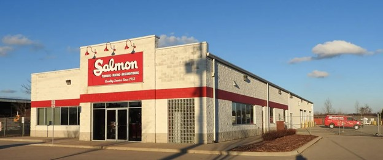

<app-navbar-custom></app-navbar-custom>
<div class="col align-content-between">
    <div class="row justify-content-center">
        <div  class="col-12  col-sm-10 col-md-8 col-lg-6  col-xl-6">
            <mat-card routerLink="/blog-post-1" class="blog-card" style="cursor: pointer">
                <mat-card-header>
                    <mat-card-title>FYDP in a Pandemic: Sourcing Fabrication Material</mat-card-title>
                    <mat-card-subtitle>January 13, 2021 - Fabrication Team</mat-card-subtitle>
                </mat-card-header>
                
                <mat-card-content>
                    <p></p>
                </mat-card-content>
            </mat-card>
        </div>
    </div>
    <br>

    <div class="row justify-content-center" style="padding-bottom: 64px;">
        <div class="col-12  col-sm-10 col-md-8 col-lg-6  col-xl-6">
            <mat-card routerLink="/blog-post-2" class="blog-card" style="cursor: pointer">
                <mat-card-header>
                    <mat-card-title>FYDP in a Pandemic: Fabrication Location, Equipment, and Safety</mat-card-title>
                    <mat-card-subtitle>January 20, 2021 - Fabrication Team</mat-card-subtitle>
                </mat-card-header>
                
                <mat-card-content>
                    <p></p>
                </mat-card-content>
            </mat-card>
        </div>
    </div>
</div>
